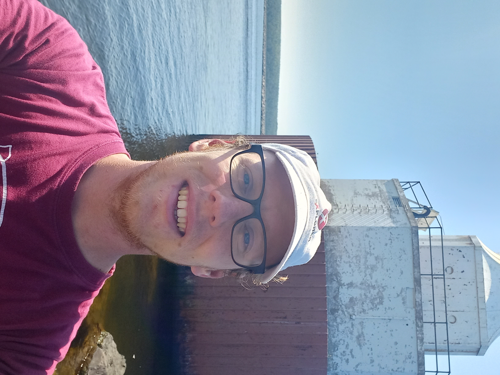

I am a JSPS Postdoctoral Fellow at the Okinawa Institute of Science and Technology (OIST), working in the Representation Theory and Algebraic Combinatorics Unit led by Liron Speyer. My research lies in the area of representation theory and algebraic combinatorics and occasionally touches extremal combinatorics. My prior interest is in the representaion theory of symmetric groups and Hecke algebras with a recent focus on the problem of computing decomposition numbers.
Previsously, I was an LMS Early Career Fellow at the University of Birmingham visiting Stacey Law. Prior to that I completed my PhD at Royal Holloway, University of London under the supervision of Mark Wildon. My PhD thesis is availabele at Pure.
My Master's and Bachelor's degrees were completed at the University of Cambridge at Homerton College.